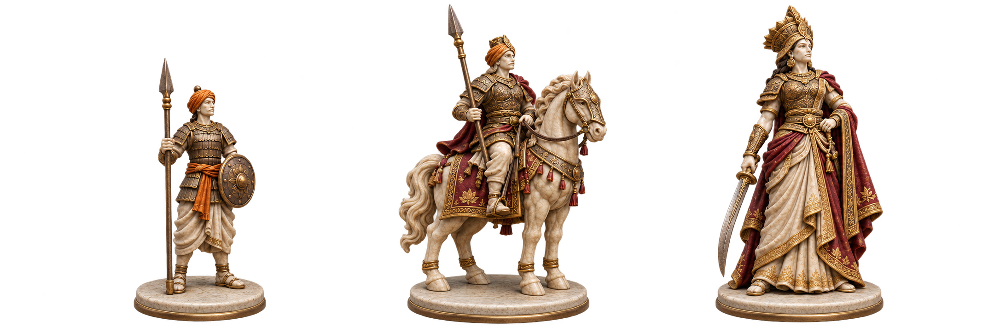

Art review / 09 November 2026 / Production gate closed
Three miniatures. One uncompromised standard.
This generated proposal explores the approved Pawn, Knight and Queen direction. It is not a render from delivered 3D models, not approved game art, and not an animation asset. The live game uses standard chess pieces while the army is unavailable.

Inspect the original 2172 × 724 PNG · Built-in imagegen · No geometry, rig or animation provenance.
Actual cell sizes, without enlargement
Same sheet scaled to three adjacent cells at each target size. This is a readability diagnostic, not board integration evidence. Browser zoom should be 100%. Observe the unequal base sizes, overly thin spear and lost ornament.
36 px / phone
40 px / compact
62.5 px / 500 px board
Review result: do not integrate
Volume and material detail are much closer to the reference than the retired vectors. However, the base diameters and projected heights are inconsistent; ornate infantry, thin weapons and the tall cavalry spear weaken the hierarchy. Colored edge contamination is visible around the cutout. A single generated view cannot validate horse anatomy, rear geometry, grips or rig deformation.
Next production milestone: three sculpted masters with equal bases, locked camera and lighting, clean alpha, reviewed turnarounds and genuinely rendered size tests. Only after that passes should attack, reaction and fracture clips be produced. No other piece classes are authorized by this benchmark.
Actual application before the gate fix · Actual application after the gate fix · Full audit and outstanding production steps